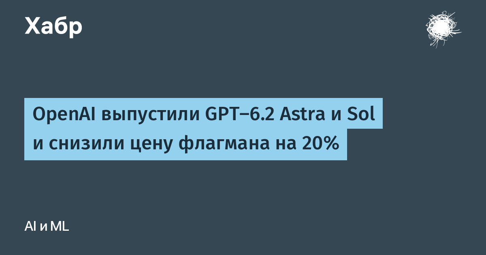

OpenAI выкатила GPT-6.2 Astra и GPT-6.2 Sol — продолжение линейки, запущенной осенью. Разделение прежнее: Astra отвечает за сложные многоэтапные проекты и агентные задачи, Sol — за обычный ежедневный объём. Обе модели принимают текст и изображения, отвечают текстом и умеют работать с инструментами, включая поиск и управление компьютером. Контекстное окно — 1,05 млн токенов, максимальная длина ответа — 128 тысяч.
Базовые тарифы API за миллион токенов: Astra — $8 на вход и $40 на выход, чтение из кэша $0,40 (минус 20% по обычным токенам и минус 60% по кэшу к прежним ценам). Sol сохранила тарифы GPT-6.1 Sol — $2 вход и $10 выход. Внимание разработчикам: при входе свыше 272 тысяч токенов включается повышенный тариф — вход и кэш дорожают вдвое, выход в полтора раза. По цене обычных токенов Astra теперь идёт вровень с Claude Fable 5.2, Sol — с Sonnet 5.5; Opus 5.5 стоит $4/$20, а вышедшая недавно Qwen4-Max заметно дешевле — $1,5/$4,5.
На FrontierCode 2.0 — тесте, где изменения кода проверяют на соответствие требованиям сопровождающих репозиторий, — Sol почти догнала Astra. Но в собственном сравнении OpenAI обе новинки уступают Claude Opus 5.5 и Fable 5.2. Обещания разработчикам скромные и по делу: более аккуратный код и меньший расход токенов на длинных агентных задачах — то есть ставка не на «умнее любой», а на выносливость в долгих автоматических работах.
Модели доступны в ChatGPT Work и Codex на планах Plus, Pro, Enterprise и Edu, а в API — под именами gpt-6.2-astra и gpt-6.2-sol. Режим Ultrafast на дорогом Pro за $500 открыт для обеих; на Pro за $200 его впервые пустили и для Sol — прямой сигнал, что OpenAI тянет скоростной агентный режим в средний сегмент.